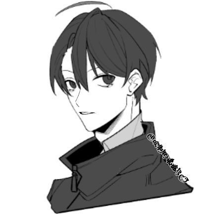

徐字
性格跳脱开朗的男高。
和数学老师同居中。
性格跳脱开朗的男高。
和数学老师同居中。
沉默寡言的学术派理科男。
和学生徐字交往中。
单纯天真的小少爷。
脾气很好，有点颜控。
雌雄莫辨的混血摄影师。
在A城采风时意外遇见了很合自己胃口的人。
“我们两个就像渐近线一样，永远向彼此靠近。不相交也没有关系——相交一瞬便会分开，而我们的故事永远在接近，永远不会结束。”
闷骚面瘫数学老师×开朗元气学霸
副cp是腹黑御姐（？）摄影师×傻白甜官二代
午后蝉鸣聒噪，呼吸似地一起一伏，把日头不知不觉往西推去。
徐字稍显困倦地托着脸，有一搭没一搭地听着例题，摊开练习册用铅笔在上面写写画画。
同桌手忙脚乱地一会儿抬头看板书一会儿埋头苦记，把自己搞得晕头转向。趁着老师背过身去整理板书时，他赶紧戳戳徐字：“徐小字快快快，上两步笔记借我抄一下——”边说着边伸长脖子去看徐字的练习册。
只见例题留出的空白处，画着一个Q版小人，和讲台上面无表情的数学老师简直一模一样。
同桌：“……”
徐字这才回过神来似地：“啊？什么？我没听讲啊？唔——中午没睡觉，现在好困……”他动作极轻地伸了个懒腰，把椅子往后翘，抬手挡了挡窗外漏进来的阳光，没有一点想听课的意思。
同桌看着这位数学第一，心悦诚服道：“兄弟，今晚的数学作业就靠你了，谢谢。”
徐字一点儿不谦虚，眯着眼睛笑起来：“好说好说。”
“刘子簿。”
数学老师停下板书的最后一笔，细框眼镜下没什么温度的目光扫过徐字，略微停顿了一下才喊出同桌的名字。
上课本来就没听懂，还被抓到和徐字聊天，刘子簿被老师这么一喊，欲盖弥彰地绷直了背，把头转过来，却不敢与老师对视。他用余光试探地瞥了徐字一眼，后者幸灾乐祸地抿着唇笑，冲他耸了耸肩。
刘子簿在只有蝉声乱窜的教室里战战兢兢地站起来，脸都白了，带着一副英勇就义的表情。
“你重复一遍这道题的思路。”数学老师冷淡的声音响起。
拼命回想自己刚才的笔记，刘子不试探的开口回答道：“这道题已知……是离心率……还有，还有过焦点的直线，根据……呃，根据……”堪堪把题目已知念了一遍，他就卡壳了。
本来就冷得掉渣的数学课瞬间来到北极冰川。
数学老师似笑非笑地打量着刘子簿，没急着提醒他，让刘子簿深感压迫。
刘子簿绞尽脑汁打算说点什么来挽救一下，就被数学老师打断了。
“徐字。”
徐字大约没想过自己会被点名，愣了一下：“啊？喊我吗？”班上响起几处窃窃的笑。他故作惊慌地吸了口气，这才站起身，倒也不紧张。
徐字是那种长得斯文秀气成绩好性格又有意思的那种人，不仅讨小女生们喜欢，也让男生讨厌不起来，还讨各种老师喜欢——除了数学老师冉江，也许吧。
冉江随时随地都是那样不绷不笑的冰山脸，偶尔露出一点儿皮笑肉不笑的鬼畜表情，堪称w高最不好接近的老师之一。虽然平时徐字总考第一，也总上课不听讲，可冉老师既没对徐字有多看重，也没有放任他走神走到底，偶尔还要抽他起来回答问题。徐字还是数学课代表，偶尔能看见他和冉江一起去食堂，但也没见两人有多熟络。
刘子簿在徐字站起来的时候，把种种传闻八卦在脑海里过了一遍，虽然还顶着冉江颇具威力的目光站着，已然和坐着的同学一样吃起瓜来。
徐字当然不知道一脸姨母笑的刘子簿在笑什么，刚刚走神的功夫，他盯着冉江想：这个老男人果然戴了我买的领带，啧，还真挺帅的。
嗯，他买的。
他想着这个心里就抑制不住的得意，天生带笑的嘴角不自觉的翘高了半分。
他把视线从领带上收回来，略一读题，是在讲昨天作业的一道典例。他撑着课桌，不太经意又清晰地接着刘子簿的思路说下去：“由已知可以用弦长公式把k表示出来......”
题答完了，徐字怎么看那条领带怎么满意，在冉江叫他坐下之前，忍不住抢白：“冉老师，您今天的领带可真帅！”
话音刚落，全班都哄笑起来。
大概除了徐字，也没人敢在数学课上敢对这么严肃的冉老师开玩笑了吧。
冉江今天的打扮和往常一样，白衬衫加西裤，严谨正式得马上拉去开董事会都没问题。领带则是上个周末徐字给他挑的。深灰色格纹，很衬他的银灰细框眼镜和那张禁欲脸。
冉江以不变应万变，仿佛并没有听见徐字的调侃：“谢谢徐字同学的解答，请坐。”
说谢谢的时候冉江微不可闻地停顿了一下，徐字敏锐地从他那波澜不惊的脸上读出了“谢谢，各种意义上”的一层意思，在心底悄悄乐开了花。
徐字倒是坐下了，刘子簿则被冉江不知有意还是无意地晾在了那里，他自知理亏，只有乖乖站着听讲。
徐字坐下后盯着冉江擦黑板的背影勾了勾唇角。
刘子簿：“徐小字，你干嘛笑的这么恶心？”
徐字沉浸在暗秀了一波没有人发现的诡异快乐之中，美滋滋地回答：“你不懂。”
刘子簿：“……”
坐下之后徐字继续在书上画刚刚没画完的冉江，刘子簿看不下去了：“为什么我每天拼死拼活地上数学课还考不过你分数的一半？这就是人与人之间的差距吗？？”
徐字一边画画一边毫无感情道：“哈哈。”
“......你听听，你听听这是人话吗！”
刘子簿前桌的妹子暴躁地转过头：“干，你们能不讲话了吗？！”
刘子簿瞬间怂了，在嘴上做了个拉拉链的动作。徐字则若有所思地抬眼看了看前桌的背影，转了一下手中的笔，眉头轻轻蹙起来。
海棠有摸鱼车。